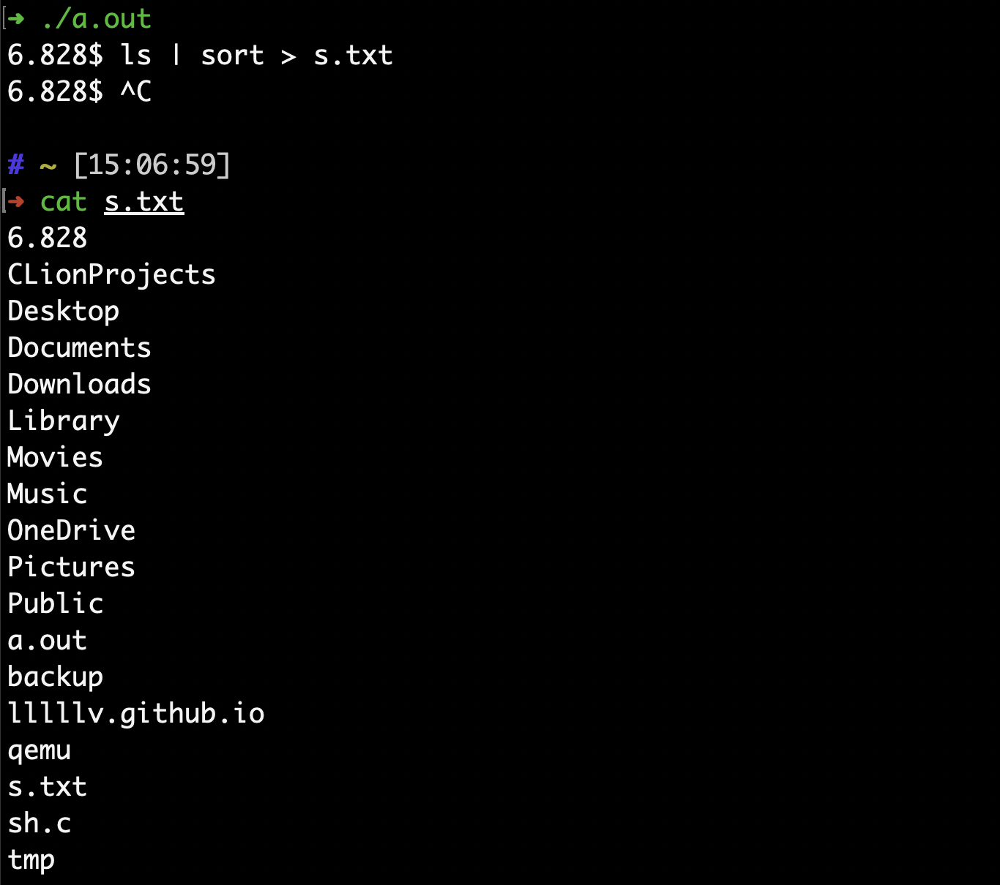

本次作业要求通过实现一些shell中的特性。这次作业不需要配置环境，在任何支持Unix API的机器上均可，所做的工作也只是补全一些代码就行。
首先阅读下载下来的sh.c代码。它的结构也是遵循了经典的shell的实现，在主函数体中循环读取命令，然后创建子进程并执行。整个代码还是比较简单易懂的，因此就不做具体分析了，直接进入正题。
Executing simple commands
首先要求实现单个命令。因为给的代码已经parse过了，所以只要关心具体的实现逻辑就行了。这里当然能够直接使用execv()来执行：execv(tmp,ecmd->argv); 但是这样还是有些不方便，因为一些命令，如 ls, cat, pwd 等，实际上其可执行文件位于/bin或者/usr/bin， 所以需要进行判断，如果在当前路径执行失败，则会切换到/bin或者/usr/bin再次尝试，如果还是失败，则报错，最后的代码是:
1 | case ' ': |
I/O redirection
接下来将实现重定向功能。这个功能很简单，就是将本该输入/输出到标准输入/输出流的内容输入/输出到指定的文件。在xv6 book中，这部分已经有所介绍了。
事实上，实现该功能的思路其实非常简单，因为在xv6中，open()默认返回的文件描述符是当前可用的文件描述符中最小的那个，所以，如果把标准输入/输出的文件描述符（对应的是0、1）关闭，再打开指定的文件的话，文件描述符0/1就会对应于给出的文件了。因为程序默认的输入/输出都是标准输入/输出（0/1），那么如果更改0/1对应的文件的话，就实现了重定向。
下面直接给出代码。重定向命令中一些需要的信息已经通过redircmd解析并保存到cmd的相应字段了，可以查看其开头的定义。
1 | case '>': |
Implement pipes
最后一个部分是实现管道命令。这部分同样在xv6 book中已经介绍过了。
Unix系统调用pipe()会创建一个管道，或者可以理解为一个临时缓冲区，管道命令前半部分指令将本该输出到标准输出的内容重定向到这个缓冲区，而管道命令后半部分指令则改为从这个临沭缓冲区读取，而不是标准输入。可见，原理上是非常简单的。
pipe()的参数是包含两个元素的int数组，它会把这个数组的第一个元素修改为临时缓冲区读/写操作的文件描述符。接着，使用系统调用dup()。dup()会返回一个文件描述符的副本，同样，它返回的是当前可用的文件描输符中最小的那个。所以，这就跟实现重定向功能的思想很类似了，首先把标准输入/输出的文件描述符释放（close()），然后使用dup()，将文件描述符0/1与pipe()返回的临时缓冲区链接，那么，本该输入/输出到标准输入/输出的内容便被重定向到了那个临时缓冲区，这就实现了管道命令。代码如下：
1 | case '|': |
你可能会问了，fork出来的子进程和父进程之间的运行先后顺序是不能保证的，如果子进程对应的管道命令的后半部，分先于父进程对应的管道命令的前半部分执行的话，这不是将会尝试从一个没有任何内容的缓冲区读取内容吗？事实上确实如此，但这并不会产生错误。如果当前是缓冲区空的话，后半部分将会一直阻塞在这里，等待前半部分写入缓冲区。
至此，这个homework就全部完成了。下面测试一下。使用命令ls | sort > s.txt，同时测试三个部分:

可见，得到了正确的结果。